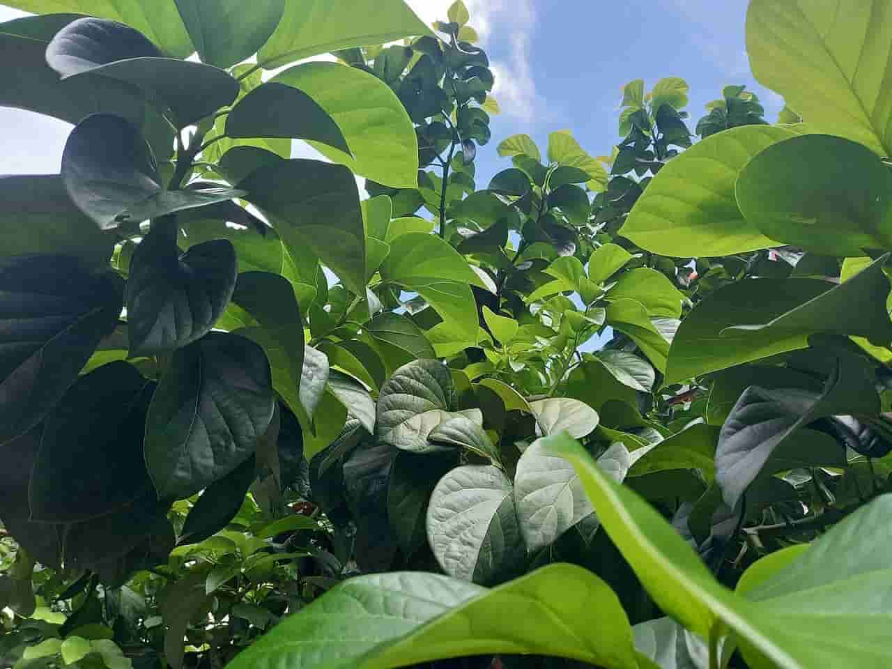

What is an avocado?
An avocado is a bright green fruit with a large pit and dark leathery skin. They're also known as alligator pears or butter fruit. Avocados are a favorite of the produce section. They're the go-to ingredient for guacamole dips. And they're turning up in everything from salads and wraps to smoothies and even brownies!
Even though they have alot of calories, they also provide a lot of health benefits when eating them. They are high in monosaturated fat, which is the 'good' fat that helps lower cholestrol!
In addition to the fruit, the leaves of Mexican avocados are used in some cuisines as a spice, with a flavor somewhat reminiscent of anise! They are sold both dried and fresh, toasted before use, and either crumbled or used whole, commonly in bean dishes.These leaves are toxic to goats, sheep, and horses
